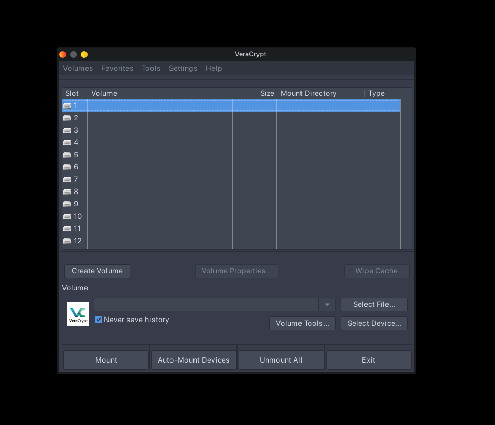

How to Encrypt Your Flash Drive with VeraCrypt
A plain-language guide for journalists, dissidents, and anyone who needs to keep files safe. No technical background required.
Supported on: Windows | macOS | Linux — Free & Open Source
Legend
~ comment
~ below is the context
Before you start
Your flash drive must be formatted as exFAT, not FAT32. exFAT works on all operating systems and supports large files.
- Right-click your drive → Properties → check the file system type.
- If it says FAT32, back up your files, reformat to exFAT, then continue.
Setup (do this once)
- Download VeraCrypt: Go to
https://veracrypt.io/en/Home.html and install the version for your OS. It's free and trusted.
- Plug in your flash drive. Make sure it's formatted as exFAT with enough free space for your vault.
- Create a volume: Open VeraCrypt → Create Volume → Create an encrypted file container → Standard VeraCrypt volume → Next.
- Save the vault to your drive: Click Select File → navigate to your flash drive → give the vault a plain name like "notes" or "documents" → Save → Next.
- Leave encryption settings as default (AES + SHA-512). Same standards used by governments. No changes needed. Click Next.
- Set the vault size: Click "Use all available free space" or set a custom size.
- If asked about files larger than 4 GiB, click Yes.
- Choose exFAT as the filesystem inside the vault. Click Next.
- Set a strong passphrase: At least 20 characters. Mix letters, numbers, and symbols. A favorite book passage works — then randomize it.
If you forget this, your files are gone forever. No recovery. No exceptions.
- Move your mouse and format: Move your mouse randomly inside the window — this creates strong entropy for the encryption key. The more chaotic, the better. Click Format. Wait. Don't unplug the drive.
Daily Use
- Plug in → Open VeraCrypt → Select File → pick your vault → Mount → enter passphrase → use it like a normal drive.
- When done: Dismount in VeraCrypt first → then eject → then unplug. Always in that order.
Critical Rules
- VeraCrypt must be installed on every computer you use the drive on.
- Dismount before unplugging — always.
- Never share your passphrase over SMS or email — use Signal or in person.
- Follow the 3-2-1 backup rule: 3 copies, 2 different storage types, 1 offsite.
Proton Drive is recommended for the offsite copy.